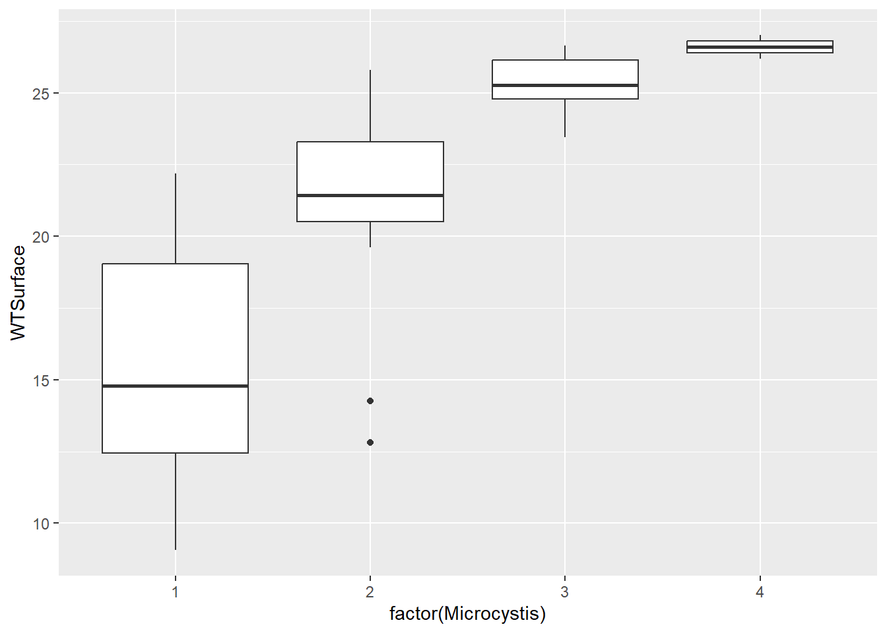

3 Making Graphs
3.1 Making Graphs in R
One of the greatest strengths of R is its ability to produce a wide variety of professional quality custom graphs. Today, we will cover the basics of visualizing data using the popular ggplot2 package. We will cover a broad range of basic graphs that are useful for visualizing water quality and biological data.
3.1.1 A note on base R graphics
When you download R, there is a suite of packages that are included. These packages include functions for carrying out a variety of basic tasks, including making graphs. I used base R graphing functions for a number of years, and there’s nothing wrong with using these functions. However, in more recent years, I have completely switched to using the ggplot2 package and think it is a great package for new R users to know.
3.1.2 Continuous vs categorical data
As we decide what type of plot to make, it is useful to consider the types of data we are plotting. Continuous data refers to numbers like water temperature. Categorical refers to types within a group (e.g., station).
3.2 Set up
3.2.1 Load the required R packages
So without further ado, let’s load the packages we need for today’s tutorial. We will load the tidyverse because it included ‘ggplot2’ and a variety of other useful packages. We will also load ‘here’ to simplify reading and writing files.
I will briefly show some features of the viridis and patchwork packages, but you don’t need to worry about downloading them yourself right now.
3.2.2 Read in the dataset
We will continue to use the same EMP water quality data set that you used for the first two parts of this course.
3.2.3 Look at at the data set
Let’s take a quick look at the structure of the data to remind ourselves of the column names and data types in this data set
glimpse(wqdata)Rows: 62
Columns: 20
$ Station <chr> "P8", "D7", "P8", "D7", "P8", "D7", "P8", "D7", "P8…
$ Date <date> 2020-01-16, 2020-01-22, 2020-02-14, 2020-02-20, 20…
$ Chla <dbl> 0.64, 0.67, 1.46, 2.15, 1.40, 1.89, 4.73, 1.74, 6.4…
$ Pheophytin <dbl> 0.50, 0.87, 0.69, 0.50, 0.56, 1.13, 1.25, 0.89, 0.8…
$ TotAlkalinity <dbl> 98.0, 82.0, 81.0, 86.0, 80.0, 93.0, 59.0, 78.0, 63.…
$ DissAmmonia <dbl> 0.150, 0.210, 0.250, 0.140, 0.110, 0.220, 0.050, 0.…
$ DissNitrateNitrite <dbl> 2.800, 0.490, 1.700, 0.480, 1.600, 0.380, 1.070, 0.…
$ DOC <dbl> 3.90, 0.27, 2.80, 0.39, 2.00, 0.19, 2.80, 1.20, 3.1…
$ TOC <dbl> 4.10, 0.32, 2.50, 0.41, 2.10, 0.20, 2.80, 1.20, 3.1…
$ DON <dbl> NA, NA, NA, NA, NA, NA, 0.30, 0.20, 0.30, 0.10, 0.5…
$ TotPhos <dbl> 0.310, 0.082, 0.130, 0.130, 0.190, 0.100, 0.188, 0.…
$ DissOrthophos <dbl> 0.200, 0.071, 0.130, 0.065, 0.140, 0.082, 0.177, 0.…
$ TDS <dbl> 380, 9500, 340, 5800, 290, 8700, 280, 7760, 227, 11…
$ TSS <dbl> 8.9, 38.0, 2.2, 18.0, 1.4, 28.0, 6.6, 35.6, 5.3, 23…
$ TKN <dbl> 0.520, 0.480, 0.430, 0.250, 0.400, 0.200, 0.400, 0.…
$ Depth <dbl> 28.9, 18.8, 39.0, 7.1, 39.0, 7.2, 37.1, 5.2, 36.7, …
$ Secchi <dbl> 116, 30, 212, 52, 340, 48, 100, 40, 160, 44, 120, 6…
$ Microcystis <dbl> 1, 1, 1, 1, 1, 1, 3, 2, 3, 2, 4, 2, 3, 2, 2, 1, 1, …
$ SpCndSurface <dbl> 667, 15532, 647, 11369, 530, 16257, 503, 12946, 404…
$ WTSurface <dbl> 9.67, 9.97, 11.09, 12.51, 13.97, 13.81, 23.46, 21.1…Aside from staton, everything is “dbl” or “double”, which just means they are considered numeric data.
3.3 Let’s make graphs!
The ggplot2 package utilizes the grammar of graphics and creates plots in “layers”. We will learn about some of the core “geometries”, which specify how the graph will look (e.g., bar plot vs line plot).
3.3.1 Histograms
Let’s start making plots, so we can learn the anatomy of the ggplot() function. We will begin with a histogram, which simply shows the distribution of data for a single variable. Histograms can be used to show the number of observations for each category (bin) of a categorical variable or the number of observations of a continuous variable within each number range (bin). We will plot surface water temperature (WTSurface).
Within the ggplot() function, the first thing we should do is specify the data set we want to plot using the data argument. Then, we will indicate which column within the data set we want to plot. These are the most basic components.
From here, we use the + sign to add layers upon the foundation we have built. In this case, we want a histogram, so we use the argument geom_histogram(). There are many types of graphs you can make and ggplot has similarly named arguments for each of them (e.g., geom_point, geom_line). We will look at more of these shortly.
(plot_hist_temp <- ggplot(data = wqdata, aes(x = WTSurface)) +
geom_histogram()
)
The default number of bins do not work very well. We can make some manual adjustments within the geom_histogram() argument. Let’s try eight bins.
(plot_hist_temp_bins <- ggplot(data = wqdata, aes(x = WTSurface)) +
geom_histogram(bins = 8)
)3.3.1.1 Your Turn
Based on the code above for the water temperature histogram, make a histogram of surface specific conductance (SpCndSurface) and try different numbers of bins.
Code
(plot_hist_sc <- ggplot(data = wqdata, aes(x = SpCndSurface)) +
geom_histogram(bins = 6)
)If we had plotted data for a single station, the histogram would be roughly bell shaped, but because we are plotting data for two stations in different parts of the salinity gradient, we get a bimodal distribution.
3.4 Time series plots
Next, let’s plot a time series of data. These plots are helpful for looking at monitoring data through time to identify patterns or for looking for outliers. For a histogram, there was only an x variable. For most types of plots, including time series plots, there are x and y variables to specify.
We will plot a year of Secchi depth data to see how it changes through the seasons. As a reminder, higher Secchi depth means lower turbidity.
For simplicity, we will just plot the data for one station, P8. Each value for Secchi will be plotted as a point, so we will use geom_point().
#filter data set to only data for station P8
wqdata_p8 <- wqdata %>%
filter(Station == "P8")
#filter data set to only data for station D7
#we will use this a little later
wqdata_d7 <- wqdata %>%
filter(Station == "D7")
#now plot this subset of the data
(plot_ts_points <- ggplot(data = wqdata_p8, aes(x = Date, y = Secchi)) +
geom_point()
)
#you can also do the filtering and plotting all at once if you want
(plot_ts_points2 <- wqdata %>%
filter(Station == "P8") %>%
ggplot(aes(x = Date, y = Secchi)) +
geom_point()
)
We can start to see how Secchi depth changed over time, but it would be easier with lines connecting the points. Let’s add some, which will highlight how ggplot works by building layers. As you might expect, we add the lines using geom_line().
#time series plot with connecting lines
(plot_ts_points_lines_p8 <- ggplot(data = wqdata_p8, aes(x = Date, y = Secchi)) +
geom_point()+
geom_line())#Because we are simply building upon the previous graph made with only the points, we can also use this shortened approach, which further demonstrates that we are simply adding layers
(plot_ts_points_lines_p8_2<- plot_ts_points +
geom_line())Now it is a little easier to see the patterns through time. We can see that Secchi depth varies seasonally, generally with low values in rainy winter months and high values in dry summer months. Note there is a gap in the time series in 2021 to reflect a missing value.
3.4.1 Your Turn
Make a similar time series plot of Secchi depth for station D7. How does Secchi compare between the two stations?
Code
(plot_ts_points_lines_d7 <- ggplot(data = wqdata_d7, aes(x = Date, y = Secchi)) +
geom_point()+
geom_line())Secchi depth is generally much lower at D7 than P8, indicating higher turbidity at D7.
3.5 Multiple time series per plot
We can plot multiple time series on the same graph in order to more easily compare them. We will plot Secchi for P8 and D7 together. The ggplot() function will apply two different default colors to the two stations.
#time series plot with connecting lines for both stations
(plot_ts_points_lines_two <- ggplot(data = wqdata, aes(x = Date, y = Secchi, group = Station)) +
geom_point(aes(color = Station))+
geom_line(aes(color = Station)))
This plot clearly shows what we noted above in the individual plots of Secchi depth, namely that Secchi depth is generally much higher at P8 than D7.
3.6 Scatterplots
Next, let’s make a scatterplot. These plots are great for looking at relationships between pairs of continuous variables. As an example, we will plot dissolved organic carbon against total organic carbon. We will go back to using the dataset with both stations.
(plot_scatter <- ggplot(data = wqdata, aes(x = DOC, y = TOC)) +
geom_point()
)There appears to be a strong relationship between these two variables. Let’s add a trend line. As with the time series plot, we are building layers. However, we are not simply adding lines to connect the points, so we aren’t using geom_line(). To plot a trend line, we use geom_smooth(). There are various smooths that could be applied, so we need to specify what we want. In this case, we use a linear model (LM). By default, a 95% confidence interval (dark gray) is added around the trend line (blue).
(plot_scatter_trend <- plot_scatter +
geom_smooth(method = lm)
)Our focus today is making graphs rather than performing statistics, but I just wanted to show the correlation coefficient for this relationship.
cor.test(wqdata$DOC,wqdata$TOC)
Pearson's product-moment correlation
data: wqdata$DOC and wqdata$TOC
t = 74.274, df = 60, p-value < 2.2e-16
alternative hypothesis: true correlation is not equal to 0
95 percent confidence interval:
0.9910303 0.9967584
sample estimates:
cor
0.9946058 The correlation is very strong between TOC and DOC (0.99). By convention, a correlation coefficient between 0.7 and 1.00 (the max) is considered a strong correlation.
3.6.1 Your Turn
Plot the relationship between Chla and Pheophytin and fit a line to it.
Code
(plot_scatter_trend_phyto <- ggplot(data = wqdata, aes(x = Chla, y = Pheophytin)) +
geom_point()+
geom_smooth(method = lm)
)This does not look like much of a relationship. Let’s look at the correlation coefficient.
Code
cor.test(wqdata$Chla,wqdata$Pheophytin)The correlation coefficient is -0.05, which indicates that Chla and Pheophytin are not significantly correlated. Even if we removed the outlier at high end of Chla, it would still not show a significant relationship.
3.7 Box and whisker plots
In scatter plots, we plot a continuous variable against another continuous variable. In some cases, we want to plot a continuous variable against a categorical variable. One type of plot that is useful in this situation is a box and whisker plot. These are great for initial data exploration and sometimes even in publications.
Microcystis abundance data is collected using a visual scoring system of 1 - 5, with 5 being the highest. Microcystis blooms are associated with high water temperature. Let’s plot the Microcystis scores (categorical) against water temperature (continuous).
#try making the plot with Microcystis as numeric type
(plot_bw1 <- ggplot(data = wqdata, aes(x = Microcystis, y = WTSurface)) +
geom_boxplot()
)
Note that Microcystis scores are ordered categories (i.e., ordinal), so R read them in as numeric data. If we try to make the plot with numeric Microcystis data, we don’t get the plot we expect. We will make this column a factor to indicate that these numbers are actually categories.
#make the plot correctly by specifying that Microcystis scores are categorical rather than numeric
(plot_bw2 <- ggplot(data = wqdata, aes(x = factor(Microcystis), y = WTSurface)) +
geom_boxplot()
)This is plot is what we were looking for, and it shows an increase in Microcystis with water temperature, like we anticipated.
Personally, I like to include all the raw data points on the box and whisker plots because it gives folks an even better understanding of the distribution of the data. To do this, we add a layer with geom_jitter(). It is called this because the points are “jittered” to minimize overlap among them.
(plot_bw_points <- plot_bw2 +
geom_jitter()
)
3.7.1 Your Turn
Microcystis needs a lot of light in addition to warm water. Plot Microcystis against Secchi depth to see whether turbidity is related to Microcystis abundance. Include the points for the raw data.
Code
(plot_bw_turb <- ggplot(data = wqdata, aes(x = factor(Microcystis), y = Secchi)) +
geom_boxplot() +
geom_jitter()
)The pattern is not as stark as for temperature, but we do see that Microcsystis scores are higher when Secchi depth is greater.
3.8 Barplots
In addition to box and whisker plots, you can make bar plots. Bar plots generally show less information than box and whisker plots, simply showing the means of a continuous variable by category. We will make bar plots that are analogous to the box and whisker plots above.
#first let's calculate the summary statistics for WTSurface and Secchi by Microcystis score
wqdata_means <- wqdata %>%
group_by(Microcystis) %>%
summarize(temp_mean = mean(WTSurface)
,temp_sd = sd(WTSurface)
,secchi_mean = mean(Secchi,na.rm = T)
,secchi_sd = sd(Secchi,na.rm = T)
)
#now make the bar plot
(plot_bar <- ggplot(data = wqdata_means, aes(x = factor(Microcystis), y = temp_mean)) +
geom_bar(stat = 'identity')
)
#another way to make the same plot
(plot_bar2 <- ggplot(data = wqdata_means) +
geom_col(aes(x = factor(Microcystis), y = temp_mean))
)
Adding error bars to bar plots provides more information about the distribution of the data, a bit like the whiskers in the box and whisker plots above. There are different options for types of error bars (e.g., standard deviation, standard error, 95% confidence interval). We will add error bars to our Microcystis plot based on standard deviation.
(plot_bar_error <- ggplot(data = wqdata_means, aes(x = factor(Microcystis), y = temp_mean)) +
geom_bar(stat = 'identity')+
geom_errorbar(aes(ymin = temp_mean-temp_sd, ymax = temp_mean+temp_sd),width = 0.2)
)
With the addition of error bars, we can see there is more variation in temperature for Microcystis score 1 than for Microcystis score 4.
3.8.1 Your Turn
Make bar plot of Microcystis scores vs Secchi depth. Include standard error bars. This is analogous to the box and whisker plot you made previously.
3.9 Stacked bar plot
Sometimes we want a bar plot that simultaneously shows a total and its component parts at the same time, which is where stacked bar plots are useful.
Let’s go back to the subset of data for Station P8. We might want to look at Dissolved Ammonium and Dissolved Nitrate and Nitrite through time together.
#first we will rearrange the data frame a bit to make plotting easier
wqdata_p8_nutrients <- wqdata_p8 %>%
#reduce data set down to just the needed columns
select(Station, Date, DissAmmonia, DissNitrateNitrite) %>%
#convert from wide to long format
pivot_longer(cols = c(DissAmmonia,DissNitrateNitrite), names_to = "Nutrient", values_to = "Value")(plot_bar_stack_abs <- ggplot(data = wqdata_p8_nutrients, aes(x = Date, y = Value, fill = Nutrient)) +
geom_bar(stat = 'identity')
)
Perhaps we are more interested in the relative values rather than the absolute values. We just make a minor modification to the code above to accomplish this.
(plot_bar_stack_rel <- ggplot(data = wqdata_p8_nutrients, aes(x = Date, y = Value, fill = Nutrient)) +
geom_bar(stat = "identity", position = "fill")
)3.9.1 Your Turn
Make a stacked bar plot showing the relative amounts of ammonia and nitrate plus nitrite for D7 using the data set below (i.e., wqdata_d7_nutrients). How does the proportion of ammonia at D7 compare to that of P8?
Code
wqdata_d7_nutrients <- wqdata_d7 %>%
#reduce data set down to just the needed columns
select(Station, Date, DissAmmonia, DissNitrateNitrite) %>%
#convert from wide to long format
pivot_longer(cols = c(DissAmmonia,DissNitrateNitrite), names_to = "Nutrient", values_to = "Value")3.10 Faceted plots
Sometimes we want to show the same type of plot for multiple groups at once, so we can compare them. It is easy to make multi-panel plots in ggplot2 using facets.
Above, we plotted Secchi depth for both stations on the same plot. Sometimes, it is more useful to create a two panel plot, in which each time series is plotted on a separate graph.
#faceted time series plot for Dissolved Ammonia
(plot_ts_points_lines_facet <- ggplot(data = wqdata, aes(x = Date, y = Secchi)) +
geom_point()+
geom_line())+
facet_grid(Station~.)3.10.1 Your Turn
Make a faceted plot of nutrients for station P8 using the dataset wqdata_p8_nutrients. Show the absolute amounts rather than the relative amounts. Show the time series stacked on top of each other like the plot above for Secchi depth.
Code
#time series plot for two analytes
(plot_bar_stack_abs_facet <- ggplot(data = wqdata_p8_nutrients, aes(x = Date, y = Value)) +
geom_bar(stat = 'identity')+
facet_grid(Nutrient~.)
)By default, the y-axis is standardized across the panels. This is generally a good idea. However, we can change this if we like. Ammonia concentrations are much lower than nitrate + nitrite concentrations, which makes ammonia concentrations difficult to read on the plot. Let’s use different y-axis ranges for the two analytes to fix that.
#time series plot for two analytes with different y-axis ranges
(plot_bar_stack_abs_facet <- ggplot(data = wqdata_p8_nutrients, aes(x = Date, y = Value)) +
geom_bar(stat = 'identity')+
facet_grid(Nutrient~., scales = "free_y")
)
3.11 Combined plots
Sometimes, it is useful to combine multiple plots into a panel that do not share a common x or y axis (i.e., are not produced using facet_grid() or facet_wrap()). These plot panels are particularly useful in publications like journal articles.
#two side by side
plot_hist_temp_bins + plot_bar_stack_abs#two stacked
plot_hist_temp_bins / plot_bar_stack_abs#one large on left and two small stacked on right
plot_hist_temp_bins+(plot_hist_temp_bins / plot_bar_stack_abs)3.12 Customizing plots
As I mentioned at the outset, one of the greatest advantages of using R to make graphs is that you can customize them endlessly. We will touch on just a few common types of customizations.
We will use the Secchi depth time series again. Previously, we used color to help differentiate the two stations, but we just used the default colors. We can specify the exact colors we want. We can also change the size, shape, and color of the points and the line type, width, and color.
3.12.1 Quick references for the customizations options
Colors: https://r-charts.com/colors/
Point shapes:
Line types:
#basic time series plot with connecting lines for both stations
(plot_ts_points_lines_two <- ggplot(data = wqdata, aes(x = Date, y = Secchi)) +
geom_point(aes(color = Station))+
geom_line(aes(color = Station)))#different point types for different stations
(plot_ts_points_lines_two_pts <- ggplot(data = wqdata, aes(x = Date, y = Secchi)) +
geom_point(aes(color = Station, shape = Station))+
geom_line(aes(color = Station)))#different line types for different stations
(plot_ts_points_lines_two_pts <- ggplot(data = wqdata, aes(x = Date, y = Secchi)) +
geom_point(aes(color = Station, shape = Station))+
geom_line(aes(color = Station, linetype = Station)))#adjust point sizes and line widths
(plot_ts_points_lines_two_pts <- ggplot(data = wqdata, aes(x = Date, y = Secchi)) +
geom_point(aes(color = Station, shape = Station), size = 3)+
geom_line(aes(color = Station, linetype = Station), size = 1.2))#Customize colors
(plot_ts_points_lines_two_custom <- ggplot(data = wqdata, aes(x = Date, y = Secchi)) +
geom_point(aes(color = Station, shape = Station), size = 3)+
geom_line(aes(color = Station, linetype = Station), size = 1.2)+
scale_color_manual(values =c("midnightblue","darkorange3"))
)#Customize point shapes
(plot_ts_points_lines_two_custom <- ggplot(data = wqdata, aes(x = Date, y = Secchi)) +
geom_point(aes(color = Station, shape = Station), size = 3)+
geom_line(aes(color = Station, linetype = Station), size = 1.2)+
scale_color_manual(values =c("midnightblue","darkorange3")) +
scale_shape_manual(values = c(15,17))
)#Customize line types
(plot_ts_points_lines_two_custom <- ggplot(data = wqdata, aes(x = Date, y = Secchi)) +
geom_point(aes(color = Station, shape = Station), size = 3)+
geom_line(aes(color = Station, linetype = Station), size = 1.2)+
scale_color_manual(values =c("midnightblue","darkorange3")) +
scale_shape_manual(values = c(15,17)) +
scale_linetype_manual(values = c("dotted","longdash"))
)So far, we have used the default color palette in ggplot2 as well as some customized colors. There are also a variety of R packages with thoughtfully developed color palettes. One example is the viridis package, which includes palettes are both attractive and color blind friendly.
#Use color palette
#our Sechi depth plot isn't a great example so we will go back to our Microcystis scores plot
(plot_bar <- ggplot(data = wqdata_means, aes(x = factor(Microcystis), y = temp_mean, fill = factor(Microcystis))) +
geom_bar(stat = 'identity')+
scale_fill_viridis(discrete = T)
)
There are also options for formatting the plot background. Many people dislike the default gray background with grid lines.
#change background from gray with white grid to white with gray grid
(plot_background_bw <- plot_ts_points_lines_two_custom +
theme_bw()
)(plot_background_classic <- plot_ts_points_lines_two_custom +
theme_classic()
)
In addition, we can customize the names used to label the x-axis and y-axis and add plot titles. It is important to provide good labels for your plot axes. In particular, make sure to include the measurement units when relevant. I don’t personally use plot title much, but they can be quickly inform your audience about the purpose of the plot.
(plot_labels <- plot_background_classic +
labs(x = "Sampling Date"
, y = "Secchi depth (cm)"
,title = "Secchi depth comparison"
)
)3.12.2 Your Turn
Using the Secchi depth plot, try out different point shapes, line types, and color combinations.
3.13 Saving plots
In RStudio, you can right click on a plot to copy it and then paste it elsewhere (e.g., email, word document), which works fine as a quick and dirty approach. However, a better way to export a plot involves using the ggsave() function. We will export our customized Secchi depth comparison plot.
ggsave(plot = plot_labels #tell ggsave which plot to export
, filename = "images/secchi_depth_comp.png" #provide the name for the image file
, width = 6, height =4, units = "in" #dimensions of the exported image
, dpi = 300 #resolution of the image (dots per inch)
)I used PNG which is a file type that works well for viewing on a computer. However, ggsave() can save plots as PDF, JPEG, TIFF, and various others. Search for ggsave() within ‘Help’ to see the full list of file types.
By default, the plot will be saved in your working directory. I specified a subfolder within my working directory.